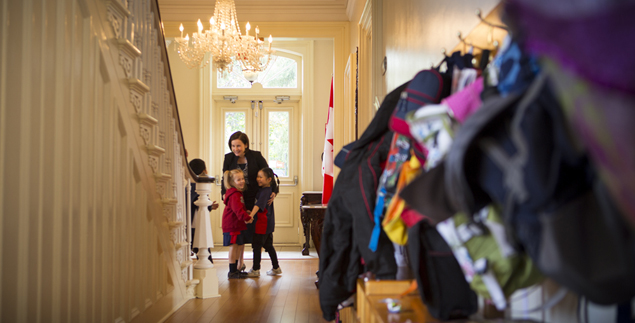
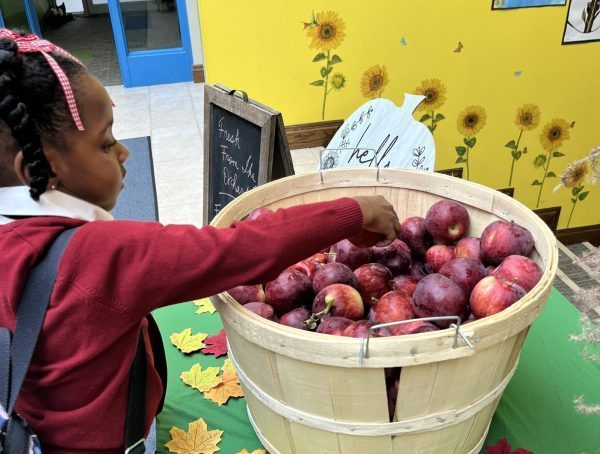
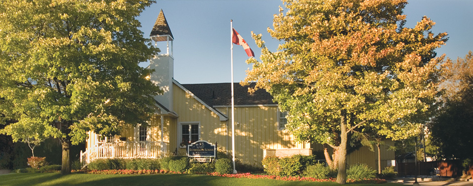
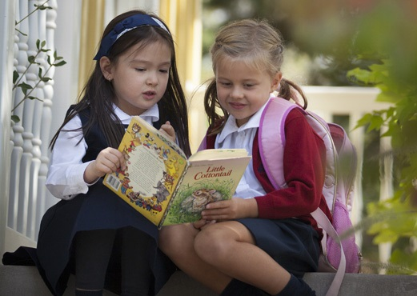
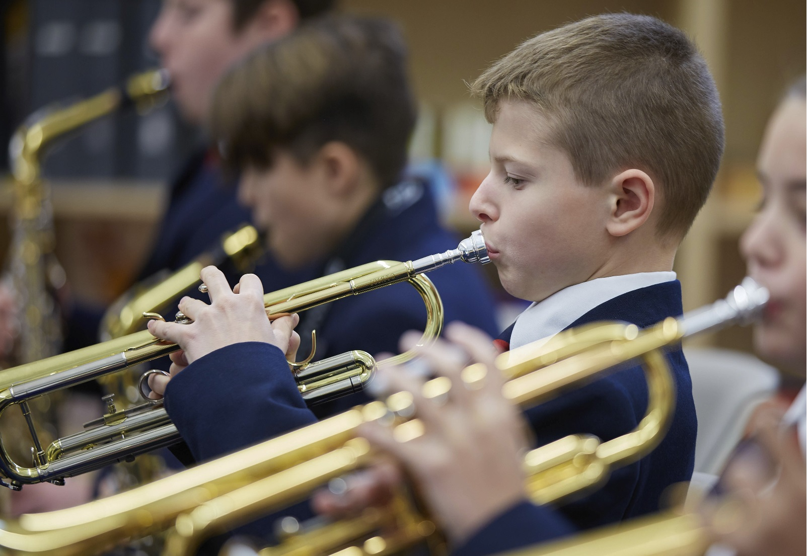
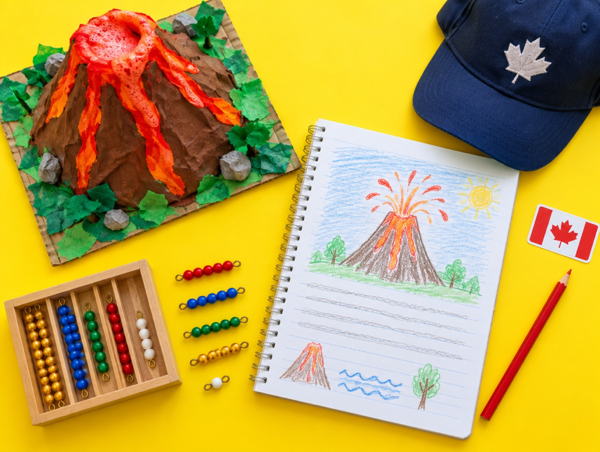

What school should be.
Montessori roots through Grade 3, an enriched Ontario curriculum through Grade 8, and French and music from the very first year. Ask our families to describe us and the word they use most is nurturing.
Viewbook recommended
Carries the school’s 2025 printed viewbook onto the web: classical capitals for the wordmark, a book serif for the message, set upright with no italic accent. The headline is simply the school’s own tagline, so print and web finally match.
From the first reader bag to Grade 8 graduation.
Rotherglen is an independent school for children aged 3.9 to 14, with four campuses in Oakville and Mississauga. Montessori through Grade 3, an enriched Ontario curriculum after that, and a community families describe as nurturing.
Schoolhouse
A sturdy Clarendon-style serif with the warmth of school signage and yearbooks. The message tells the whole Casa-to-Grade-8 story in one specific line, borrowed from a real parent’s testimonial.
The school families call nurturing.
Ask Rotherglen parents to describe the school in one word and most choose nurturing. Montessori through Grade 3, an enriched Ontario curriculum to Grade 8, four campuses in Oakville and Mississauga.
Institutional
A heritage American grotesk, set big and tight, over a real Rotherglen photo at full width. It reads established and confident rather than trendy. The headline uses the one word parents actually use most.
Every Rotherglen student is REAL.
Respectful, Engaged, Academically motivated and a Leader: the profile all four campuses teach to, from Casa at age 3.9 to Grade 8. A co-educational, non-denominational independent school in Oakville and Mississauga since 1979.
Four qualities we teach to, at every campus and every grade.
REAL is how Rotherglen describes the student it sets out to develop. Each quality shows up in specific programs families can see on a tour.
Of themselves, inclusive of others, and protective of the environment.
- Mutual Respect program
- Earth Week and Orange Shirt Day
In their learning, athletics, the arts and co-curricular activities.
- Arts, athletics and clubs
- The Workshop for hands-on science
To achieve excellence, supported by teaching matched to how each child learns.
- Differentiated learning
- The Learning Success Centre
And innovators prepared to contribute locally and globally.
- R.E.A.C.H. character and leadership
- Community service
What is happening across the campuses.
One stream for all four campuses, drawn from the news pages and campus feeds. Real post titles and dates shown.


One process for all four campuses, in five steps.
The same steps, documents and fee apply whichever campus you choose. Each campus has a named admissions contact to guide you.
We are impressed with the level of communication at Rotherglen and feel that we are a part of such a wonderful community.
A named contact at every campus.
Every Rotherglen student is REAL.
Respectful, Engaged, Academically motivated and a Leader, at four campuses in Oakville and Mississauga.
The REAL Student
Annual-report clarity. Ivory, viewbook navy, crest gold. Schibsted Grotesk with Source Serif 4.
What stayed from 1c
The strategy: lead with the REAL student profile, prove the school is active week to week, and make admissions plain.
What changed
- The sun-yellow fields, stickers, tilted photo and giant acrostic are gone. Yellow survives only as the crest-gold accent.
- REAL is presented as “Portrait of a Rotherglen student”, the school’s own page name, with where each quality shows up in practice.
- The feed becomes News and events: real post titles and dates, plus the next three confirmed events.
- Admissions sits on viewbook navy with a watermark crest, echoing the 2025 viewbook cover, and adds the key facts panel.
- Contacts become a proper admissions directory.
- Real campus photography throughout; no AI imagery on this page.
Why it lifts appeal
It reads like a well-run institution: clear, specific and confident. Parents comparing independent schools get the profile, the proof and the process on one page.
Watch-outs
- News needs a posting rhythm; Erin Mills’ latest post is from October 2025.
- Confirm Tuesday Talks times before launch.
Effort
Medium. Template refresh plus a news feed that merges the four campus blogs.
Rotherglen.com · three concept directions
A review of the current site and four campus pages, and three distinct ways to make the school more appealing to prospective families. Each concept changes the strategy, not just the skin.
Today · homepage, live assets, 1440px
Rotherglen School is a co-educational, non-denominational community of private independent schools for students in Montessori, Casa (ages 4-6) to Grade 8. With four campuses located in Oakville and Mississauga, we offer learning environments which foster excellence in education, character and leadership programs…
2045 Sixth Line
2050 Neyagawa Blvd.
929 Old Derry Rd.
3553 South Common Ct.

• Oakville Primary Campus [Register]
• Oakville Elementary Campus [Register]
• Meadowvale Elementary Campus [Register]
What holds the site back
- It reads as 2014. Theme stylesheet dated Oct 2014, 940×370 slider photos from Oct 2012, the same Vimeo tour on every campus, bevelled nav bar, 16px grey Georgia body copy.
- The homepage is a directory, not a story. One paragraph, then four address cards. No promise in the hero, no call to action above the fold.
- Campus-first navigation forces a decision before understanding. A parent must pick “Oakville Primary” vs “Oakville Elementary” before learning what Casa is or which grades overlap.
- The proof is buried. Founded 1979, 45+ years, “nurturing” as the word parents use most, the REAL student profile, R.E.A.C.H., Tuesday Talks, the Learning Success Centre: none of it is on the homepage.
- Every visit starts with a popup that covers the content on all five entry pages.
- Broken details erode trust. Grey image placeholders where three Heads of School should be, “Our Campuses” links back to Home, red “click here” text links as the only CTAs, tuition pages 404 from the elementary menu.
- Mobile is a bolted-on menu plugin on a fixed 940px layout.
Brand DNA every concept keeps
The crest (lion, horse, oak), navy and red, and the lines that already work: What School Should Be · Engaged Minds, Inspired Hearts, Purposeful Lives · the REAL student · Seeing is Believing. Real site photography is reused throughout; AI-generated hero imagery is marked as placeholder for a reshoot.
What school should be, at every age.
One Rotherglen, four campuses. A single path from the Montessori Casa classroom at age three and a half to a Grade 8 graduate who is respectful, engaged, academically motivated and ready to lead.
Four stages. One school.
Montessori roots through Grade 3, an enriched and progressive Ontario curriculum from Grade 4. French and music start in Casa.
Practical life, sensorial, language, mathematics and culture in a prepared Montessori classroom.
Montessori principles with an enhanced Ontario curriculum, differentiated for each learner.
An enriched, progressive style of learning: The Workshop for hands-on science, athletics, the arts.
R.E.A.C.H. leadership, the Learning Success Centre, and a confident step into high school.
Which one is yours?
Each campus has its own Head of School and its own character. All four share one philosophy, one uniform and one admissions team.


What school should be, at every age.
Casa to Grade 8, four campuses in Oakville and Mississauga, since 1979.
One School, Four Front Doors
Warm editorial. Paper, navy, crest gold. Instrument Serif with Instrument Sans.
The big idea
Parents shop by their child’s age, not by street address. The site is reorganised around one journey (Casa → Primary → Junior → Upper) and a finder that picks the campus for them. Four campus sites become one school with four front doors.
What changes
- Age + postal code finder replaces the four-card directory as the primary action.
- The journey strip shows what each stage teaches and which campuses offer it, so the JK-to-1 vs 1-to-8 overlap stops being confusing.
- Campus pages become chapters of one site: same nav, same admissions flow, one “Book a tour”.
- Proof moves above the fold: 1979, four campuses, the “nurturing” line, a real parent quote.
- Open house becomes a banner inside the flow, never a popup.
Why it lifts appeal
It answers the first question a parent has (“is there a place for my 4-year-old near me?”) in one step, and it makes Rotherglen feel like a 45-year institution rather than four small schools.
Watch-outs
- Campus heads may want their own identity; keep a per-campus welcome and Instagram feed one level down.
- Finder needs real catchment logic (or simply distance) and a fallback for families who already know the campus.
Effort
Medium. New information architecture plus a template refresh. Existing WordPress content maps cleanly onto the four stages.
Seeing is believing.
Walk through every Rotherglen campus from your kitchen table. Then come and see it for real.
Choose a door.
Each campus gets its own three-minute walk-through, led by its Head of School. No form, no popup, no waiting for October.
Every hour, on purpose.
- 01Greeted by name at the doorThe open-door approach: two-way communication with home, every day
- 02The Montessori work cyclePractical life, sensorial, language, mathematics, culture
- 03French and music, from CasaSpecialist teachers at every campus
- 04The WorkshopHands-on science in the Georgian house at Meadowvale
- 05R.E.A.C.H., clubs and athleticsCharacter, leadership, band, U10 soccer
- 06Before and after school careAt all four campuses
“Rotherglen has conditioned G to become the considerate, honest and confident young man he is today.”
Seeing is believing.
Four campuses, Casa to Grade 8. Tour them all tonight.
Seeing Is Believing
Cinematic. Midnight navy, crest gold, cream. Bodoni Moda with Manrope.
The big idea
The school already says “Seeing is Believing” on every campus page and then hides the seeing behind a 2012 video and a popup. This concept makes the website the open house: a walk-through per campus led by its Head of School, a day-in-the-life, and one persistent action, “Book a tour”.
What changes
- Full-bleed hero with the walk-through as the primary action; open house lives in a ticker, not a popup.
- Four campus “doors”, each a short video with its Head of School (fixes the missing headshots and gives each campus a face).
- “A day at Rotherglen” replaces the principal’s letter with what actually happens: work cycle, French, music, The Workshop, R.E.A.C.H.
- A single parent quote, set large, instead of a testimonials page nobody finds.
- Phone-first: the video is the homepage on mobile.
Why it lifts appeal
Private-school parents compare on feel. A confident, cinematic presentation signals a school that knows its worth, and the walk-throughs let a family fall for a campus before they ever book.
Watch-outs
- Needs a real shoot: four short films and stills at blue hour. Placeholders are marked.
- Dark UI must keep text at 4.5:1; body copy is cream at full opacity, not grey.
- Keep information pages (fees, FAQ, calendar) light and plain underneath the cinematic front door.
Effort
Medium-high. Light IA change, heavy on production. Highest potential lift for tour bookings.
Meet the REAL Rotherglen kid.
Since 1979 we have been growing respectful, engaged, academically motivated leaders, from the Yellow School to Grade 8, in Oakville and Mississauga.
Real kids, real week.
Pulled from the four campus Instagram feeds and the news pages, so the homepage is never older than this week. Sample posts shown.

Oakville Primary · CasaFive steps. No mystery.
One process for all four campuses. Fees and schedules published on the site, not behind a phone call.
Parents learn here too.
A monthly speaker series on raising kids, open to every Rotherglen family and to families thinking about joining.
A real person at every campus.
905 338 3528
primary@rotherglen.com
905 849 1897 ext. 1240
dcolgan@rotherglen.com
905 565 8707
lrossi@rotherglen.com
905 820 9445
elanigan@rotherglen.com
Meet the REAL Rotherglen kid.
Respectful. Engaged. Academically motivated. Leaders. Since 1979, Casa to Grade 8.
REAL Kids
Bright and honest. Yellow School sun, navy, crest red. Bricolage Grotesque with Atkinson Hyperlegible.
The big idea
Rotherglen already has a student profile (REAL) and four lively Instagram feeds; the site hides both. This concept leads with the kind of kid the school produces, shows this week’s real school life on the homepage, and makes admissions and fees plain. Warm, transparent, and unmistakably the Yellow School.
What changes
- REAL becomes the hero and the site’s spine: Respectful, Engaged, Academically motivated, Leaders.
- “This week at Rotherglen” aggregates the four campus feeds and news into one designed grid, tagged by campus.
- Admissions shown as a five-step tracker with the $300 fee and assessment stated up front; fees published.
- Tuesday Talks promoted as a reason for prospective parents to visit before applying.
- “Say hello” puts a named admissions person and a direct line for each campus above the footer.
Why it lifts appeal
Families choosing between independent schools reward transparency and energy. Fresh weekly content proves the school is alive; plain-language admissions removes the biggest friction on the current site.
Watch-outs
- Needs a content owner per campus and a feed moderation step; stale feed is worse than no feed.
- Publishing tuition is a leadership decision; the tracker still works with “fees on request”.
- Keep the playful tone for Casa and Primary; Grade 7 to 8 pages should lean on the navy sections.
Effort
Medium. Feed aggregation plus a template refresh; little new photography needed because the campus feeds supply it.